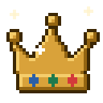
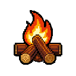
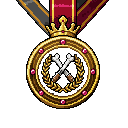
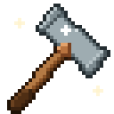
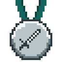
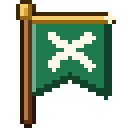
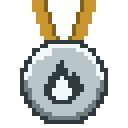
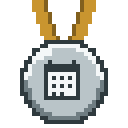
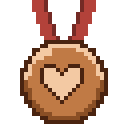
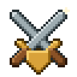

OrtoQuestões
Novo: ranking e conquistas
Estudar virou aventura.
Suba no ranking, mantenha a fogueira acesa e colecione emblemas a cada questão.
28 dias
Chefe
Tela ilustrativa, nomes fictícios.


Novo: ranking e conquistasSuba no ranking, mantenha a fogueira acesa e colecione emblemas a cada questão.

28 dias
Chefe
Tela ilustrativa, nomes fictícios.

Como funcionaGeral e da semana. As setas mostram quem subiu desde ontem.
5 questões por dia mantêm a chama. Com 3 dias seguidos, ela aparece no seu nome. Parou, apaga.

Mais de 70 conquistas, algumas secretas. Escolha 3 para exibir ao lado do nome.

Tela ilustrativa, nomes fictícios.

Por que isso funciona
Estudar um pouco por dia fixa mais do que maratonar na véspera.

O que você erra reaparece na revisão no dia certo, até virar acerto.

Ver colegas subindo no ranking é o empurrão para abrir o site hoje.

Novo: ranking e conquistas
Suba no ranking, mantenha a fogueira acesa e colecione emblemas a cada questão.
Tela ilustrativa, nomes fictícios.
Como funciona
Geral e da semana. As setas mostram quem subiu desde ontem.
5 questões por dia mantêm a chama. Com 3 dias seguidos, ela aparece no seu nome. Parou, apaga.
Mais de 70 conquistas, algumas secretas. Escolha 3 para exibir ao lado do nome.
Tela ilustrativa, nomes fictícios.
Por que isso funciona
Estudar um pouco por dia fixa mais do que maratonar na véspera.
O que você erra reaparece na revisão no dia certo, até virar acerto.
Ver colegas subindo no ranking é o empurrão para abrir o site hoje.
Crie sua conta grátis
Sem cartão. Em menos de um minuto você já está no ranking.